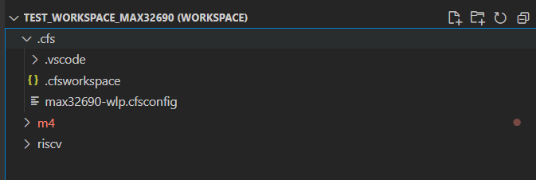
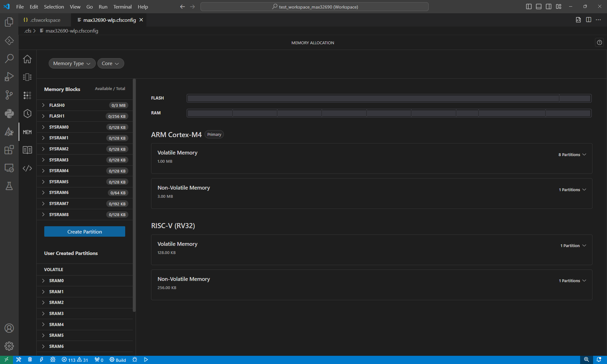
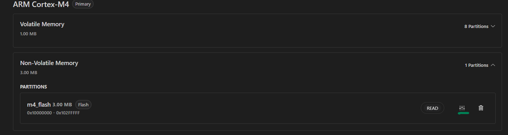
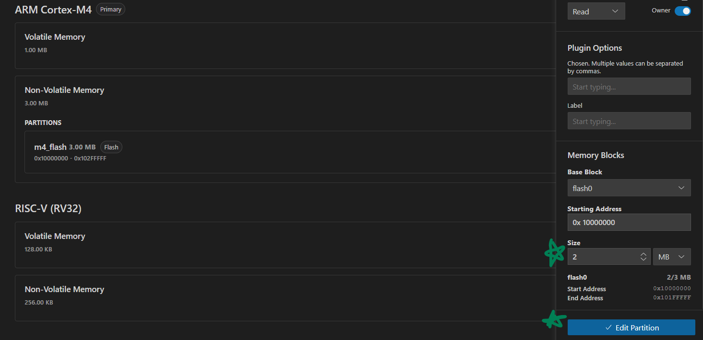
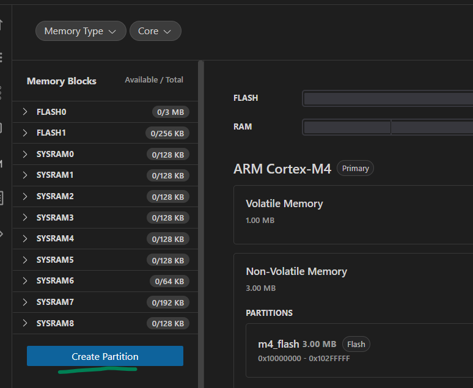
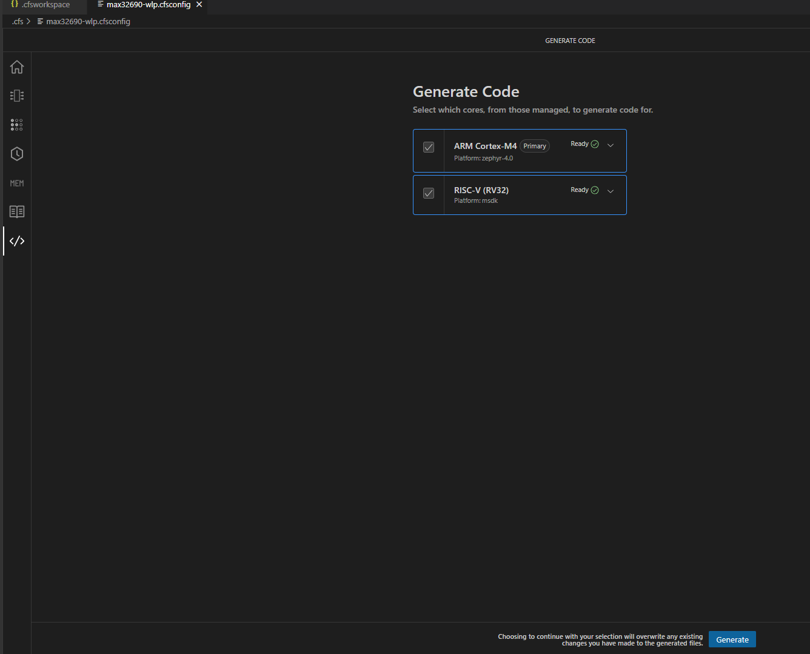
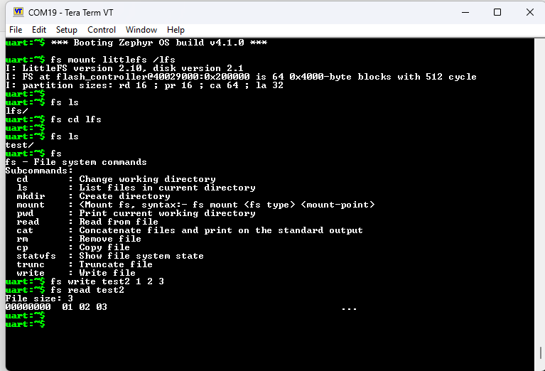

Using Zephyr & Codefusion Studio to Partition a Flash Filesystem
A filesystem offers distinct advantages both in prototyping and production. Some of these are telemetry, debug info, and availability as a direct operator interface to a system’s storage capability. Filesystems can store onboard mixed media such as images, audio files, debug logs, and much more. Flash filesystems present interesting difficulties in their implementation due to the nature of Flash as a memory technology. In particular, flash technologies must implement strict boundary conditions and wear leveling across many memory pages, since flash memory has limited use lifetime in terms of write cycles. The Zephyr RTOS supports numerours Flash Filesystems such as ext4, LittleFS, and FatFS. With the memory planning tools in CodeFusion Studio 1.1.0+, a developer can freely partition a flash filesystem on a device in just a few minutes.
Reference Documentation & Sample Applications
File Systems — Zephyr Project Documentation
Zephyr Setup Needs
To enable a filesystem, Zephyr requires a partition with a “storage” label somewhere in the Device Tree. One thing we will eventually want to produce is the following DT snippet:
&flash0 {
partitions {
compatible = "fixed-partitions";
#address-cells = <1>;
#size-cells = <1>;
m4_flash: partition@0 {
reg = <0x0 DT_SIZE_M(2)>;
};
# Storage partition for Flash filesystem
storage_partition: partition@200000 {
label = "storage";
reg = <0x200000 DT_SIZE_M(1)>;
};
};
};
Setting Up a Memory Partition in Codefusion Studio
In Codefusion Studio v1.1.0+, there exists a “Memory Allocation” tool which can be used to set up a custom partition in the device memory (SRAM or Flash). This is useful for a variety of reasons, such as storing secure certificates or large mixed-format multimedia files for example. A partition can even be set up to store logs in the event of a HardFault with detailed crash-related information to assist in retroactive fault analysis.
To set up a custom partition in Codefusion Studio, open the Memory Analysis tool by using the .cfsconfig file within the .cfs folder of a workspace.
 traditional method of mapping out device memory (GNU Linkerscript) and you might actually find this rather pleasing! What we want to do is 2 things:
Decrease the amount of flash allocated to the Cortex M4 core by 1 MB.
Allocate the newly freed flash for the filesystem.
Decreasing the size of the Cortex M4 Flash
To do this, click the “Non-Volatile Memory” menu, then click the slider icon on the “m4 flash” partition.
A menu will open on the right side, which has a lot of cool features! I will save most of them for another day, to keep this explanation brief. Scroll to the “Memory Blocks” section at the bottom of the menu, then decrease the size of the “m4 flash” partition to 2 Megabytes. Then click “Edit Partition”.
Creating a Storage Partition
Next, click the “Create Partition” button on the far-left side of the Memory Allocator menu. Create the partition with the following settings:
Storage Partition Attributes
Memory Type |
Flash |
Partition Name |
storage_partition |
Assigned Core(s) |
ARM Cortex-M4 |
Access Permissions |
Read/Write |
Plugin Options → Label |
storage |
Base Block |
flash0 |
Size |
1 MB |
Generate Code
Finally, head to the end of the Config Tools, and click “Generate”.
This should produce an overlay file under “boards” that contains the flash partition shown at the top of this page. Next, we have to enable the correct Kconfigs to include the flash filesystem, set it to use LittleFS, and enable the FS Shell.
# Enable Shell
CONFIG_SHELL=y
CONFIG_LOG=y
CONFIG_LOG_MODE_MINIMAL=y
# Let __ASSERT do its job
CONFIG_DEBUG=y
# fs_dirent structures are big.
CONFIG_MAIN_STACK_SIZE=4096
# Experimental configs for Flash Filesystem
CONFIG_FLASH=y
CONFIG_FLASH_MAP=y
CONFIG_FILE_SYSTEM=y
CONFIG_FILE_SYSTEM_LITTLEFS=y
CONFIG_FILE_SYSTEM_SHELL=y
# From fs/shell sample...just copy for now
CONFIG_SHELL_BACKEND_SERIAL_RX_RING_BUFFER_SIZE=128
CONFIG_HEAP_MEM_POOL_SIZE=16384
CONFIG_FS_LITTLEFS_FC_HEAP_SIZE=2048
Finally, build and flash the application. You should be greeted with a shell over UART if your board enables the shell with a serial backend by default (e.g. the “apard32690//m4” board). If you type “fs”, you’ll see a list of newly enabled filesystem shell commands! From here, you can mount the filesystem, create a directory, use Unix-style file commands, and finally run a write/read test. The commands of interest are shown below. Note that in the below image, the “test” directory had already been created by calling the mkdir test command.
